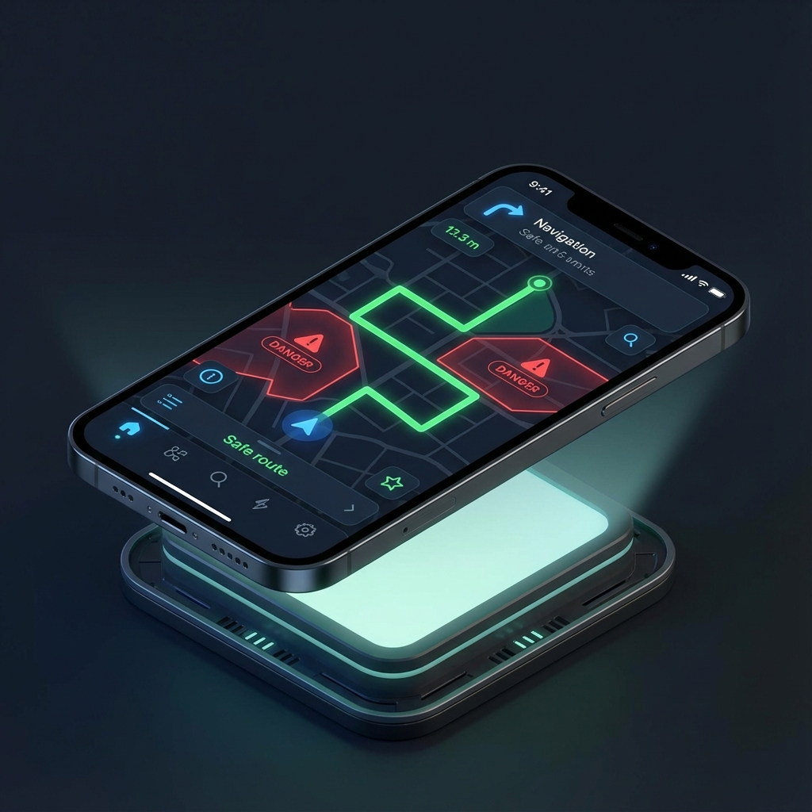
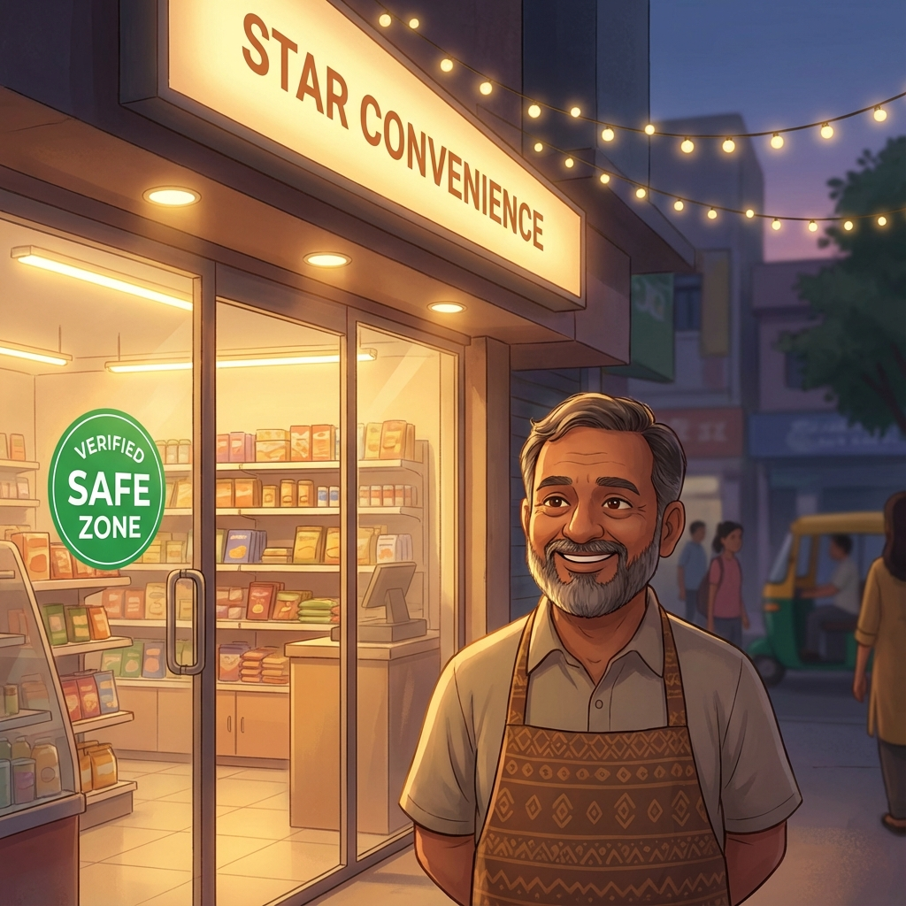

Avoid unlit streets, construction zones, and hazardous areas. The smartest navigation for your safety.
We prioritize streets with verified functional streetlights to ensure you're never walking in the dark.
Real-time updates on construction, open sewage, and broken roads help you steer clear of danger.
Community reports keep the map updated instantly. Help others stay safe by reporting hazards.

Our advanced routing engine calculates a safety score for every possible route. Red zones indicate high-risk areas like construction sites or unlit alleys, while green paths guarantee verified street lighting and police presence.
Try the MapJoin thousands of users who report real-time hazards. See a broken streetlight? Mark it. Noticed a safe open shop? Recommended it. Together, we build a safer city map for everyone.
Active Users
Hazards Fixed

We've partnered with over 500 local businesses to create "Verified Safe Zones." Look for the green sticker on shop windows. These locations offer shelter, water, and emergency assistance if you ever feel unsafe.
Share your live location with trusted contacts. If you deviate from the safe route or stop unexpectedly, our system automatically alerts your safety circle. You never have to walk alone again.
"I walk home from the library every night. Safe Route helps me avoid the dark alleyways I used to take. I feel so much safer now."
"The live family tracking is a game changer. My parents don't worry as much when I'm out with friends."
"Accurate hazard reporting. I marked a broken streetlight and it was updated on the map instantly for everyone else."
"The safe zones feature is brilliant. Knowing which shops are 'safe spots' makes exploring new areas much less intimidating."
"Finally a navigation app that cares about safety, not just speed. I recommend this to all my female friends."
"Works perfectly in Delhi. Helped me avoid so many construction blocks near the metro station."
"The interface is beautiful and so easy to use. Love the dark mode!"
We built Safe Route because getting from point A to point B shouldn't be a risk.
Whether you're walking home late at night or navigating a new city, standard maps only show you the
fastest path—not the safest.
Safe Route analyzes real-time data on street lighting, road conditions, and active construction zones to
chart a course that prioritizes your wellbeing.
It's not just a map; it's a companion that looks out for you.